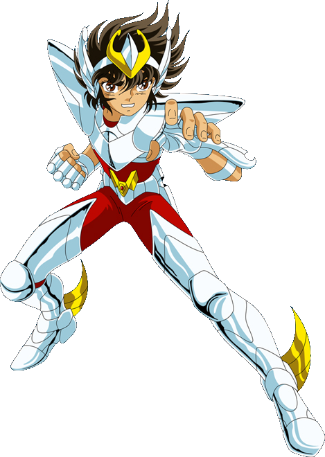

Cavaleiro de Bronze
Seiya de Pegasus
Cavaleiro de Bronze da constelação de Pégaso do século XX, incumbido com a missão de proteger a deusa Atena nas Guerras Santas no século XX. Caracterizado principalmente por nunca desistir de lutar em qualquer situação, por mais impossível ou difícil que possa parecer, ele também é a reencarnação do Cavaleiro de Bronze Tenma de Pégaso e do Primeiro Pégaso, o primeiro homem a ferir o Deus Hades nos tempos mitológicos.
Learn More
